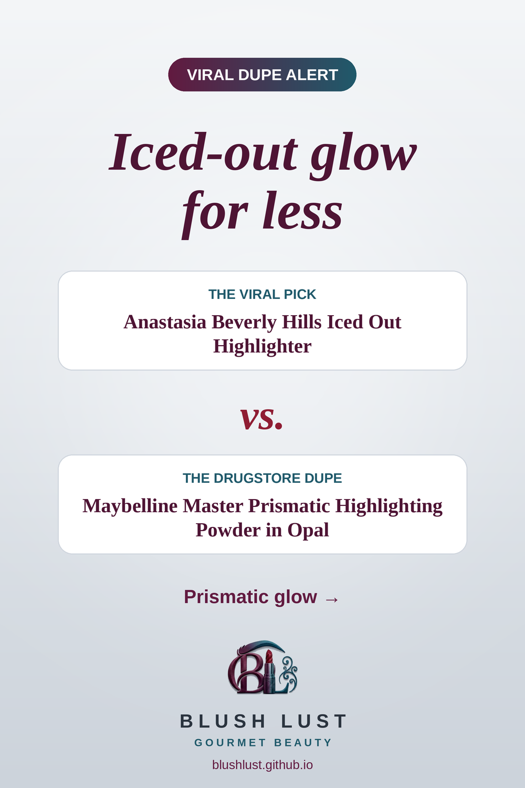

The holographic highlighter, for less
A metallic, chrome-finish highlight for an eye-catching glow.
This post contains affiliate links. If you buy through them, we may earn a small commission at no extra cost to you. As an Amazon Associate I earn from qualifying purchases.
Maybelline Master Chrome Metallic Highlighter
The viral pickAnastasia Beverly Hills Iced Out Highlighter
vs.
The dupeMaybelline Master Chrome Metallic Highlighter

See today’s price on Amazon.ca →
Comparisons reflect what beauty shoppers commonly say, not lab testing. Shades and formulas vary — check reviews before you buy.
More complexion dupes
Featured in: The Glow Edit: 8 Drugstore Dupes for Lit-From-Within Skin →
Featured in: Maximalist Makeup for Less: 8 Drugstore Dupes for a Full Glam Look →
Featured in: Gifts for the Glow Girl: 8 Viral Glow Dupes Under $20 →